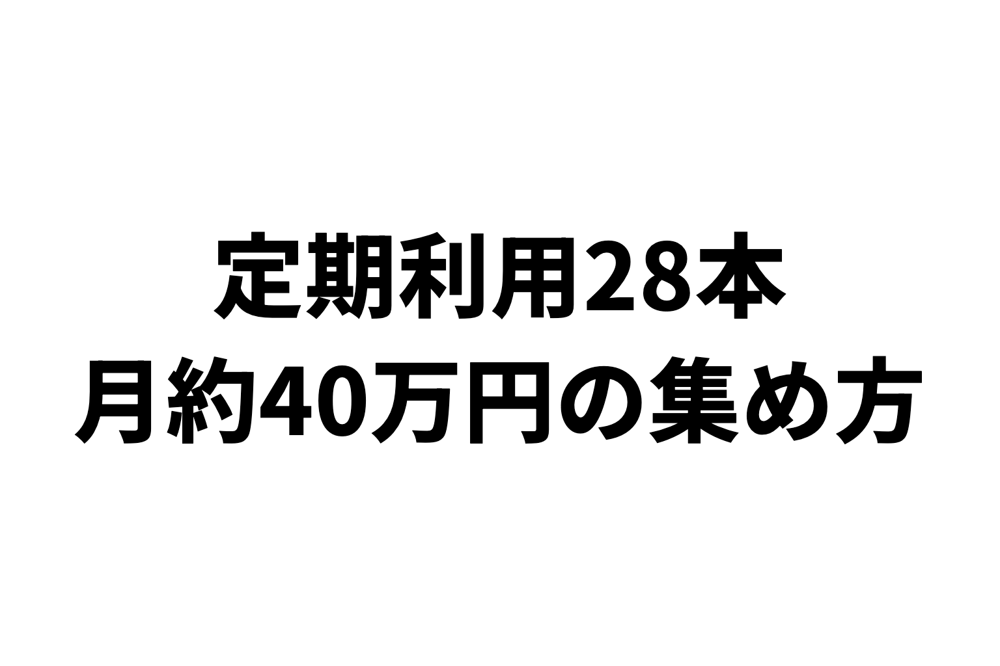
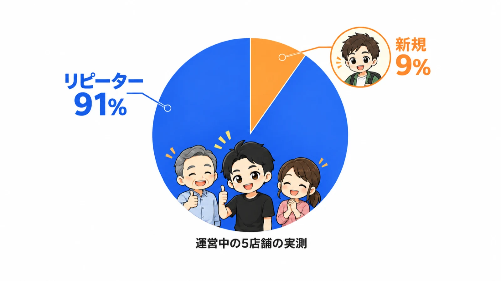
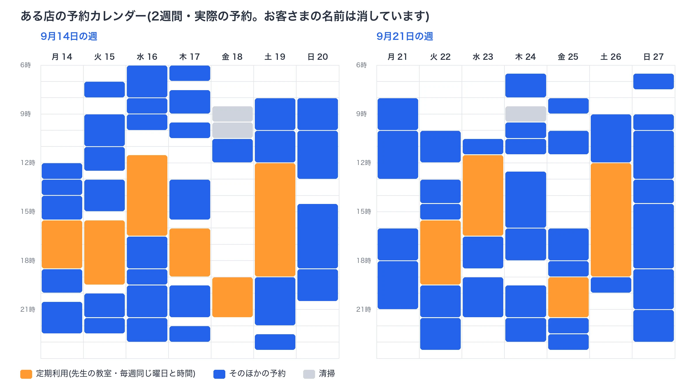
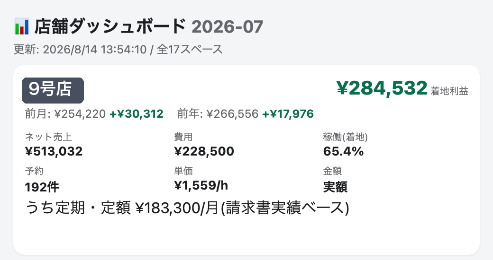
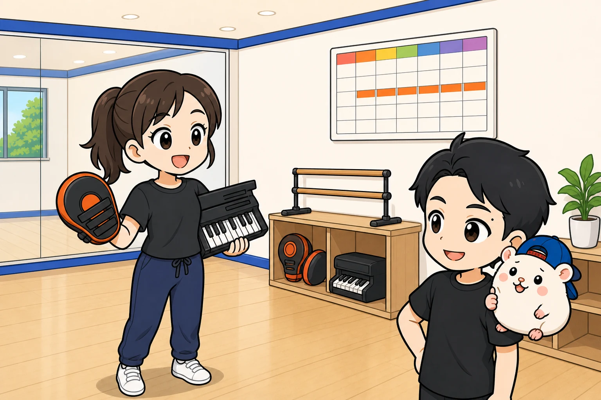
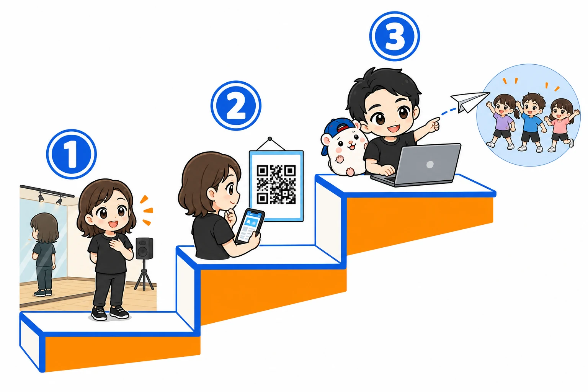
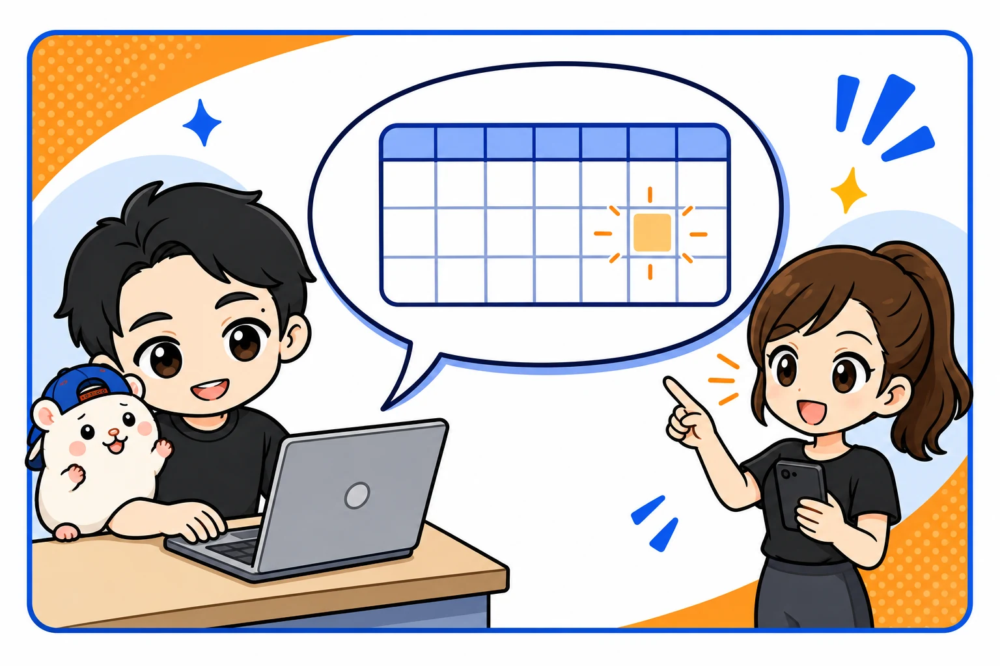
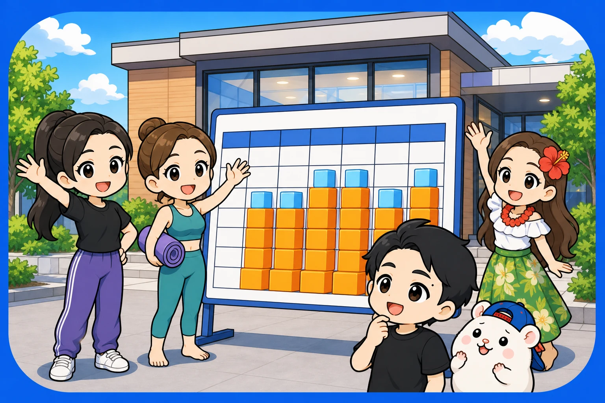

レンタルスペースの中でも、ダンスのレンタルスタジオの集客は、ちょっと変わっています。
新しいお客さんを集めつづける商売では、ないんです。
いちばん大事なのは、教室の先生に、毎週使ってもらうこと。
例えば、いま運営している5店舗には、毎週決まった曜日と時間に使ってくれる「定期利用」が、28本入っています。
定期利用だけの売上は、月に約40万円です。
今日は、この定期利用をどうやってふやしているのか。
先生へのDMの送り方まで、ぼくがやっていることを書きます。
1. 公式サイトと定期の予約の9割は、リピーター
まず、実測の数字から。
いま運営している5店舗で、公式サイトと定期利用の予約を数えました(予約サイト経由は、名前が分からないので入っていません)。
91%が、リピーターの予約でした。

運営中の5店舗の実測(公式サイトと定期の予約。予約サイト経由は入っていません)
レンタルスペースというと、予約サイトに載せて、新しいお客さんを呼びこむ商売に見えます。
でも、ダンスのレンタルスタジオは、ちがいます。
一度来た人が、何度も来てくれる商売です。
とくに住宅地の駅の店は、この割合が高い。
近くに住んでいる人、近くで教室をやっている先生が、何度も来てくれるからです。
そして、リピーターのなかでいちばん強いのが、定期利用です。
2. 定期利用28本・月約40万円の中身
定期利用というのは、「毎週火曜の17時から21時」のように、曜日と時間を決めて、毎週使ってもらう使い方です。
キッズダンス、ヨガ、フラダンス、バレエ、武道。
教室をやっている先生が、レッスンの会場として使ってくれます。
いま運営しているダンスのレンタルスタジオ5店舗で、定期利用は合わせてこうです。
- 本数: 28本
- 1ヶ月に埋まる時間: 約284時間
- 定期利用だけの売上: 月に約40万円
本数と時間は2026年9月はじめの時点。売上は2026年6月の実績です(手元に入った額)。9月から始まった定期は、この売上にはまだ入っていません

ある店の、実際の予約カレンダー(2週間)。オレンジが定期利用です。お客さまの名前は消しています
例えば、平日の夕方に週1回、4時間使ってくれるキッズダンスの教室なら、月に2万4,000円ほどになります。
1本は小さい。
でも、毎月、決まって入ってくる。
これが28本あると、店の土台になります。
3. 定期利用が入ると、店の景色が変わる
定期利用の強さは、金額だけではありません。
月がはじまる前から、予約が埋まっていることです。
例えば、いちばん強い9号店。
定期利用だけで、1ヶ月に100時間前後が埋まっています。
売上の約3割が、定期利用です。

自作の店舗ダッシュボード(9号店・2026年7月)。いちばん下の行が、定期利用の月額です
家賃が月19.8万円と、ぼくの店でいちばん高いのに、いちばん利益が出ている。
その土台が、定期利用です。
もうひとつ、11号店の例。
開業して半年ほどのころ、定期利用は1本だけでした。
それが4本にふえたら、月がはじまる時点で埋まっている予約が、2倍以上になりました。
土台が3本ふえただけで、スタートの位置が上がる。
単発の予約は、そこに足されていきます。
4. 定期利用は、どこの店も受けつけている

ここで1つ、正直に書きます。
定期利用は、ほとんどの競合も受けつけています。
「うちは定期利用ができます」だけでは、先生に選んでもらえません。
だから、ぼくは「ここで教室を続けるのがいちばん楽」という状態を作っています。
やっていることは、この4つです。
- 毎週同じ時間を、確保してあげる
- レッスンの道具を、無料で預かる
- 使うほど安くなる割引をつける
- 申し込みを、かんたんにする
いちばん大事なのは、1つめです。
先生がいちばん困るのは、「来週、いつもの時間が取れなかった」。
生徒さんに、時間の変更を連絡しないといけません。
毎週同じ時間が、いつも使える。
これが、定期利用のいちばんの価値です。
2つめの道具も、効きます。
うちの店では、キックボクシングのミット、リトミックの卓上ピアノ、バレエのバーを預けている先生がいます。
「道具がここにあるから、ここで教室をやる」
この状態になると、先生はほかの店に移りません。
5. 定期利用をふやす順番

ぼくがやってきた順番です。
① まず、単発で使ってもらう
いきなり定期利用になることは、ほとんどありません。
まず単発で使ってもらって、「このスタジオ、いいな」と思ってもらう。
そのうえで、店の中の掲示と公式サイトで、定期利用のことを知ってもらいます。
掲示には、申し込みフォームにつながるQRコードを入れています。
② 公式サイトに、定期利用のページを作る
「毎週の教室の場所を探している先生」が検索したときに、見つけてもらうためです。
③ 教室の運営を調べて、DMを送る
待つだけでなく、こちらからも連絡します。
いちばんのねらい目は、キッズダンスの教室を運営している会社です。
自分のスタジオを持たずに、「火曜はこの駅、木曜はこの駅」と、曜日ごとにスタジオを借りて教室を開いている会社があります。
こういう会社は、いい場所が見つかれば、長く使ってくれます。
実際、11号店でふえた3つの教室のうち、2つは近くのスタジオから移ってきた教室でした。
6. 先生へのDMは、この型で送る

ここからが、DMの送り方です。
送る前に、確認すること
その先生が、もう自分の店のお客さんではないか。
予約の記録と、名前を照らし合わせます。
もう使ってくれている先生には、送りません。
すでに使ってくれているなら、実質、定期利用と同じだからです。
そこに「はじめまして」と送るのは、とても失礼です。
あとの2つは、これです。
- 相手のホームページかInstagramを、1分見る(「拝見しました」をうそにしない)
- いま空いている曜日と時間を、確かめる
文面に入れる6つ
- 名乗り(どこの駅の、なんというレンタルスタジオか)
- 相手の教室を見て、ひとこと
- 店の概要(駅からの距離・広さ・人数・鏡・営業時間・料金)
- 定期利用の条件(時間の確保・道具を預かる・割引)
- いま空いている曜日と時間
- 見学の案内
いちばん大事なのは、5つめです。
「空きがあります」では、先生は動けません。
例えば、こう書きます。
毎週木曜の17時から19時は、固定でご案内できます。
これなら、先生は自分のクラスに当てはめて考えられます。
空き状況のカレンダーのリンクも入れておくと、「空いてますか?」のやりとりが1回へります。
やってはいけないこと
- ほかのお客さんの名前を出さない。「キッズダンスの教室が毎週使っています」までにする
- 申し込みフォームのリンクを、いきなり送らない。まず返事をもらって、やりとりしてから案内する
- 根拠のない「地域No.1」「最安」は書かない
連絡が来たら
すぐに、ていねいに返します。
見学の日を決めて、実際に部屋を見てもらいます。
キッズダンスの教室が決まったら、自転車をとめる場所と、送り迎えの車のことも、先生から保護者の方に伝えてもらいます。
ここを忘れると、近くの人から苦情が来ます。
ぼくの店でも、ありました。
7. まとめ

- ダンスのレンタルスタジオの公式サイトと定期の予約は、9割がリピーター
- いちばん強いのは定期利用。いま5店舗で28本、定期利用だけで月約40万円
- 定期利用は、どこの店も受けつけている。差をつけるのは「時間の確保・道具を預かる・使うほど安くなる・申し込みのかんたんさ」
- 順番は、単発 → 店の掲示と公式サイト → 教室の運営を調べてDM
- DMには、いま空いている曜日と時間を具体的に書く。もう使ってくれている先生には送らない
あなたの店(または、出したい駅)のまわりには、曜日ごとに会場を探している教室がいくつありますか?
「駅の名前 キッズダンス」で、一度検索してみてください。
定期利用の条件の決め方、申し込みフォームの質問、先生に送った文面の穴埋め版まで、1冊にまとめました。
📘 『【きくりん式】レンタルスペースは「ダンススタジオ」で稼ぐ！完全ロードマップ』
ぼくの11店舗の実録と、毎日使っている物件探しのツールつきです。
第0部はまるごと無料で読めます。
販売価格は3部売れるごとに3,000円ずつ値上がりします（上限あり）。内容・最新価格は販売ページをご確認ください。
▼もう1つの副業、AI社員だけのeBay輸出店の実録🐹
https://note.com/cham_ebay
▼ブログ(レンスペ×eBay、全記事まとめ)
https://rental-space.net